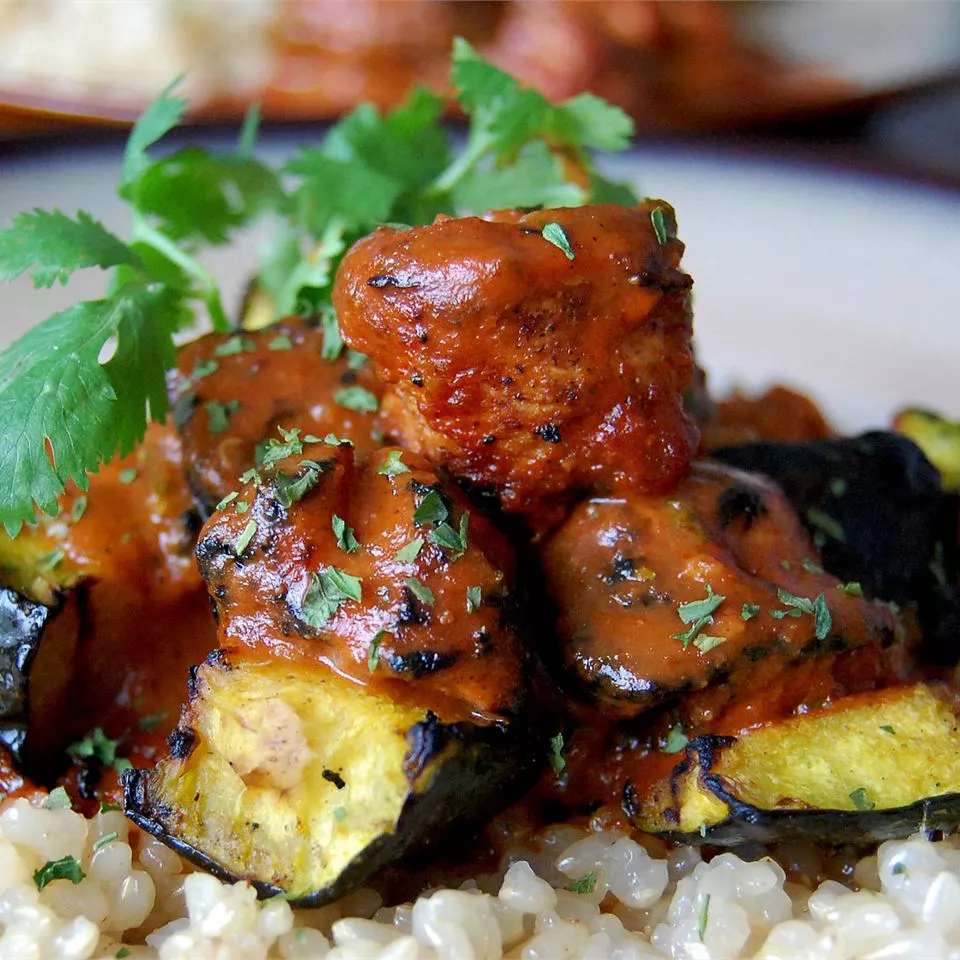

Chicken Tikka Masala

Ingredients
- Yogurt (1 Cup)
- Lemon juice (1 tbsp)
- Ground cumin (4 tsp)
- Ground cinnamon (1 tsp)
- Cayenne pepper (2 tsp)
- Ground black pepper (2 tsp)
- Minced ginger (1 tbsp)
- Salt (2 tsp)
- Boneless skinless chicken breast (3)
- Skewers (4 long)
- Butter (1 tbps)
- Minced garlic (1 clove)
- Finely chopped jalepeno pepper (1)
- Paprika (2 tsp)
- Tomato sauce can (8 oz)
- Heavy cream (1 cup)
- Fresh Cilantrao (1/4 cup)
Steps
- Combine yogurt, lemon juice, cumin, cinnamon, cayenne, black pepper,
ginger, 1 tsp salt into a large bowl. Stir in chicken, cover and
refrigerate for 1 hour.
- Preheat a grill to high heat.
- Lightly oil a grill, thread chicken onto skewers and discard the marinade.
Grill until juices run clear, about 5 minutes each side.
- Melt butter in a skillet over medium heat. Saute garlic and jalapeno for 1 minute.
Season with reamining cumin, paprika and salt. Stir in tomato sauce and cream.
Simmer on low heat until sauce thickens, about 20 minutes.
- Add grilled chicken and simmer for 10 minutes. Transfer to serving platter
and garnish with fresh cilantro.